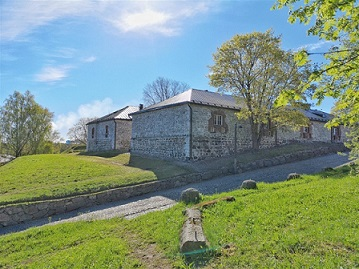

Lappeenranta perustettiin kaupunkina vuonna 1649, mutta sen alueella on asutusta ja merkittäviä historiallisia kohteita jo keskiajalta lähtien.

Varhaishistoria ja pitäjäaika
Lappeenrannan alueella on ollut jatkuvaa asutusta ainakin ajanlaskun alusta nykypäivään saakka, erityisesti Kauskilan alueella, jossa sijaitsee ristiretkiaikaisia ja keskiaikaisia muinaisjäännöksiä. Lappeen pitäjä perustettiin 1300-luvulla, ja sen vanha keskus oli Kauskilassa, jossa sijaitsi myös pitäjän kirkko ja kappeli. Alue ulottui Saimaan etelärannalle, ja Lapvedenrannan markkinapaikka toimi ennen kaupungin perustamista tärkeänä kauppapaikkana, jossa viipurilaiset kauppiaat pitivät varastoja ja hallintorakennuksia. Tervaa ja muita markkinatuotteita tuotiin laajalta alueelta, mikä teki sijainnista liikenteellisesti edullisen
Kaupungin perustaminen
Lappeenrannan kaupunkioikeudet myönnettiin vuonna 1649 kuningatar Kristiinalta, ja kaupungin perustamista esitti Viipurin ja Savonlinnan läänin maaherra Johan Rosenhane. Kaupungin ruotsinkielinen nimi, Villmanstrand, viittaa asiakirjassa olevaan villiä metsäläistä kuvaavaan sinettiin. Varsinaisen kaupungiksi julistamisen suoritti kenraalikuvernööri Pietari Brahe. Kaupungin porvarit saivat harjoittaa kauppaa muiden maakaupunkien kanssa, mutta suoraan ulkomaankauppaan heillä ei ollut lupaa.
Linnoitus ja sotahistoria
Lappeenrannan linnoituksen rakentaminen aloitettiin 1720-luvulla ruotsalaisten toimesta, ja sitä laajensivat myöhemmin venäläiset. Linnoitus sijaitsee nykyisessä Linnoituksen kaupunginosassa ja sen itä- ja pohjoispuolella on satama. Linnoitus on ollut strategisesti tärkeä rajakaupunki, erityisesti Viipurin menetettyä Venäjälle. Linnoituksen alueella on nähtävissä 1700- ja 1800-luvun rakennuksia, kuten Jumalansynnyttäjän suojeluksen kirkko, Suomen vanhin ortodoksinen kirkko, joka valmistui vuonna 1785. Linnoituksessa käytiin myös merkittäviä taisteluja, kuten Lappeenrannan taistelu Hattujen sodassa vuonna 1741, jolloin kaupunki ryöstettiin ja poltettiin, ja venäläiset veivät vankeja orjiksi.